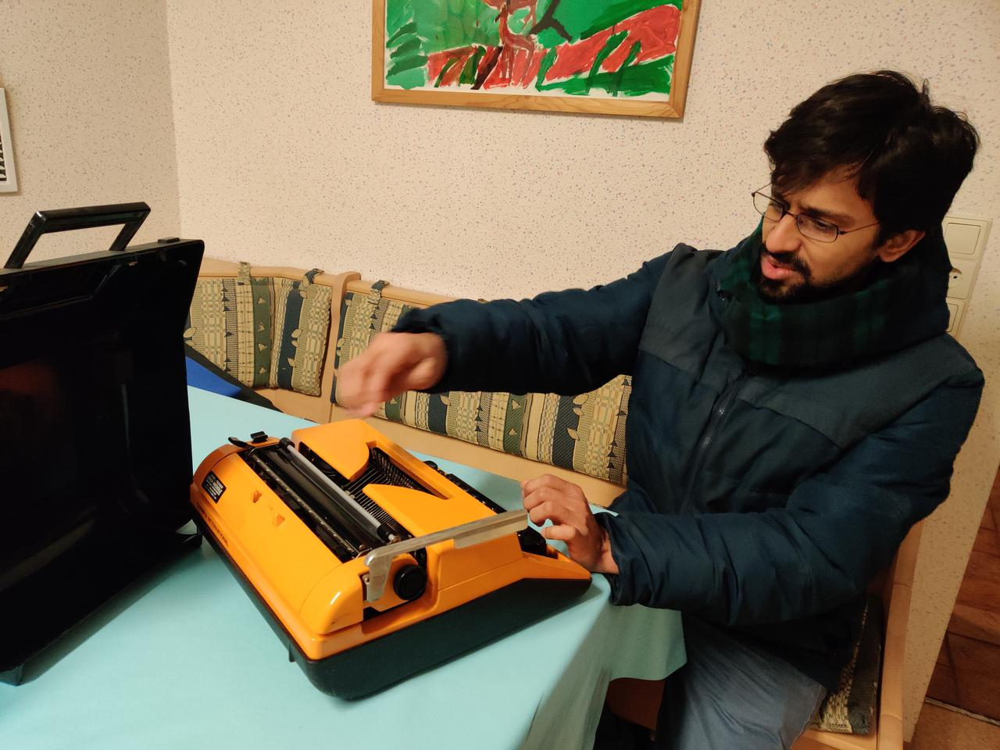

Code

-
My Github profile
-
Reproducible code
In the recent past I've been trying to make as much of the actual data crunching, analysis and visualisation as computationally reproducible as possible. This means avoiding steps which include clicks with a mouse, or manual copy-pasting of files. In the Python ecosystem, it is incredibly easy to do this using the rich package system and Jupyter notebooks. The first paper from my PhD was a computational model of bat echolocation in groups, and the essential parts of the paper (results, analysis and plots) can be independently recreated by running a couple of files. Check it out here.
-
Python packages
In the context of quantifying horseshoe bat calls I've been working on a Python package to identify and segment sounds based on their frequency modulation. The package is called itsfm. Check out the project page here.
-
Android apps with Kivy
Smartphones are everywhere and I've always been curious to start playing around with them, and may be use them for a research project at some point. Using the Kivy Python package I've recently been playing around and making small (and rather trivial) apps. Check out these repos and try them out yourself: screenbash, youscrolled.